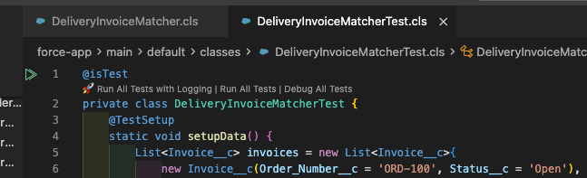
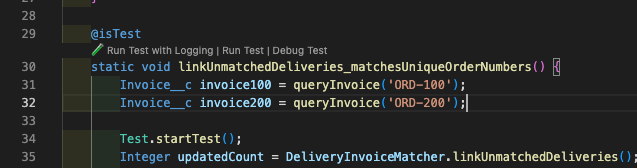

VS Code / Cursor extension: CodeLens on Apex test classes to run a method or the whole class with debug logging, then open the downloaded log.
Built for Salesforce day-to-day work. The Salesforce CLI can run tests and
fetch logs; the gap is the click path. This puts “run with logging” on the
test itself and streams output into an Apex Test Logging
channel, then opens the latest .log in the editor.


Apex *Test*.cls
→ CodeLens / context menu
→ Extension spawns bash + Salesforce CLI
enable FINEST tail → sf apex run test → download log
→ Output channel + progress notification
→ File watcher opens logs/*.log
**/*Test*.cls, commands, output channel, child process.
sf apex run test and
sf apex log get so PATH/auth come from a login shell (nvm,
Homebrew, etc.).
Personal tool, v0.0.1. I use it in VS Code and Cursor. Source is public.